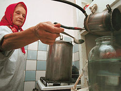

Иные времена – иные нравы. Так говорили древние, и эта мысль, перейдя из исторического наследия в нашу повседневность, нашла здесь достойное себе подтверждение. Времена бывают разные, и необязательно – плохие. Примером тому служит отношение ко многим запрещенным, но при этом успешно существовавшим вещам, пусть и в уродливой форме.
Касается это и самогоноварения и самогоноупотребления, явления широкораспространенного в народе. И правда, совсем недавно было – ну, никак нельзя (хотя никто не мог толком объяснить – почему?), а теперь можно. Почему можно, объяснить как раз легко. Просто потому, что хочется, и вреда от этого нет. Вот и славно.
Без нюансов здесь не обойтись. Нам скажут: «Извините, а как же государственная монополия на продажу спиртного?» Нет уж, сами извините: мы ведем речь о самогоне, как о напитке для собственного употребления, а не для продажи. Это надо разграничивать.
Опять слышен голос: «Приготовят всякое зелье, сами отравятся и все, кто угостятся, тоже». Опять надо разграничить: недоброкачественное изделие определяется не личностью изготовителя, а соблюдением этой личностью правильной технологии самогоноварения. А для этого, кроме знания и умения, ничего и не надо. Знания мы предоставляем вам в этой книге. Умение придет при точном использовании этих знаний.
Наши предки-славяне вовсю готовили спиртное уже в средневековье, поставив его производство на «поток». Напомним еще раз, что уже к XI веку в Кремле существовали: Малый государев, Малый боярский и Малый походный погреба, где умельцы делали разнообразные меды, водки, пиво и квасы. И, что для нас важно, продукция эта, изготавливаемая без использования знаний, которые дает современная наука, была отличного качества.
Неспроста посетивший Московию небезызвестный Адам Олеарий опробовал 22 напитка (это только по официальным данным) и заявил компетентно: «Один лучше другого». А уж дворяне прошлого столетия и вовсе считали долгом чести иметь в своем поместье «фирменный» самогон, которым потчевали соседей. Всевозможные настойки являлись незаменимым атрибутом званых обедов и ужинов и были гордостью своих хозяев.
Хорошо знакомая картина для читателя русской литературы: барин отправляется на охоту вместе с соседями – мелкопоместными дворянами. Сели на лошадей, протрубили в рога и понеслись: впереди свора борзых, за спиной дворовые слуги, жены и дети малые провожают, платочками машут. Замучают зайца, поля повытопчут, лошадей загонят – и промокшие насквозь, усталые, но довольные – назад, в усадьбу, где уже и стол готов.
Сели, начали охоту обсуждать, (что так, что не так), и кушают одновременно. При этом же и про самогонную настоечку не забудут. Хозяин не нарадуется – нравится гостям его угощение, а как же иначе? Старался, крестьян гонял, сам проверял неоднократно – знает, что не бурдой гостей потчует, а высококачественным продуктом, хотя и словосочетания такого «высококачественный продукт» не знает и знать не может.
Напротив, что-то трудно просачиваются из исторических источников сведения об отравлении самогоном, и это неспроста. Ну кто же, скажите пожалуйста, сам себя травить станет? Поэтому мы и говорим господину, критически настроенному к домашнему самогону: не надо делать поспешных выводов. Сами, небось, не прочь.
Прежде чем вести речь об употреблении самогона, не лишним будет вспомнить, что он из себя представляет.
Что такое, настоящий самогон? Это прозрачный, лишенный цвета, крепкий алкогольный напиток, получаемый путем перегонки из разнообразного сырья при соблюдении правильной технологии приготовления, крепостью от 40% содержащегося в нем спирта и выше.
Самогон ненастоящий – мутная жидкость, имеющая тяжелый, неприятный (сивушный) запах. Употребление его вредно и опасно для здоровья, и, как минимум, связано с состоянием тяжелого похмелья на следующее утро. Это как минимум. Максимумом может стать летальный исход.
Такой самогон нам не нужен. Вернемся к первому – настоящему, и сосредоточимся на нем. Опять слышен голос, замучил уже: «Да зачем он вам нужен, самогон этот? Вон, сколько водки вокруг, причем очень неплохой». Верим вам и полностью согласны. Но разрешите сказать, что хороший самогон собственного изготовления не хуже хорошей же водки и не вызывает сомнений, возникающих у вас в тот момент, когда вы покупаете вино-водочные изделия: а вдруг там вода? Или еще что, похуже? Нет, качественный домашний самогон таких сомнений не вызовет. Здесь все натурально.
Сейчас мы с вами рассмотрим тему употребления самогона как горячительного напитка удовольствия ради.
Любой крепкий напиток требует к себе определенного отношения, главным образом, внимательности при употреблении. Самогон исключением не является, напротив, он находится на первом месте по способности приводить пьющего в аномальное состояние. Исключением для особо искушенных служит спирт медицинский, неразбавленный. Однако следует знать, что данный продукт для внутреннего использования не предназначен и применяться может лишь в лечебных целях. Не признающие этого факта подвергают себя серьезной опасности.
Медицинские сотрудники низшей ступени иерархии – санитары, могут с нами не согласиться, но это их дело. В конце концов, случись что – в больнице же и работают, помощь рядом. Но и им не советуем. По крайней мере, разбавляйте.
Итак, употребление самогона – когда, где, с кем и сколько. Пить крепкие напитки рекомендуем вам только в вечернее время, в диапазоне от шести до девяти часов вечера. Почему так? Дело в том, что наш организм полностью «просыпается» именно в это время и приобретает возможность переносить тяжелые нагрузки. При этом все опять-таки индивидуально. Если вы страдаете самогононепереносимостью, то пить его вам нельзя в любое время дня или ночи.
Необходимо сказать о том, что для многих людей употребление крепких и крепленых спиртных изделий просто недопустимо, поскольку содержание алкоголя в крови опасно для их сердечно-сосудистой или нервной систем, других внутренних органов.
Кроме того, некоторые люди, среди которых часто встречаются непьющие и малопьющие, выпив лишь одну или две рюмки, начинают вести себя неадекватно окружающей среде и становятся опасными и для себя, и для тех, кто находится поблизости. Вам следует считаться с этим фактором, чтобы избежать серьезных и ненужных неприятностей.
Мы предполагаем, что вы относитесь к тем, для кого употребление крепкого спиртного допустимо и не связано с опасностью для здоровья, и продолжаем говорить о том: когда? Так вот, обретая в вечернее время оптимальную для себя энергетику, мы легче переносим состояние, возникающее при употреблении спиртного. Это состояние приятное и экзотическое, отнимающее много сил, дающее при этом значительную нервно-физиологическую разгрузку и требующее последующего длительного отдыха, То есть – сна.
Напомним вам, что древние считали допустимым выпивать на праздничном ложе лишь три чаши вина, сильно разбавленного водой и высочайшего качества. Третья чаша выпивалась как настраивающая на сон и предполагающая его в ближайшем времени. Они, наши предки, были гораздо ближе к природе, чем мы, и не только к природе окружающей, но и к самой человеческой тоже. Пренебрегать их опытом было бы неразумно. И все-таки по незнанию или пренебрежению часто именно так и происходит.
Выпьете вы, скажем, самогон днем, или того хуже – с утра, и приключения начинаются. Впереди день, полный больших и маленьких дел и событий, а вы впали в состояние праздника души, в котором делать что-то нельзя – не получится, или вовсе выйдет гадость какая-нибудь. Поэтому пейте самогон только вечером, когда все дела закончены и вы можете спокойно расслабиться и отдохнуть.
Есть и еще один важный момент, относящийся ко времени употребления самогона. Определяется он географическими, А еще точнее, климатическими условиями проживания потребителей самогона. Как вы понимаете, речь идет о временах года. Например, в краях, где всегда тепло, самогон не может проявить себя в полной мере и с лучшей стороны. В жару пьется плохо.
Иное дело – там, где зима. Пить самогон в холодное время порой не только приятно, но и необходимо. На нашей земле, где холода длятся по полгода, самогон нашел себе достойное место и не раз спасал промерзшие тела и души от всяких болезней и бед. Дело в том, что прогреться, зайдя в дом с тридцатиградусного мороза очень непросто, особенно если вы были легко одеты, а дома нет ни меда, ни малинового варенья. Тут-то и приходит на помощь самогон.
Где пить самогон? Это второй вопрос по степени важности, но не менее серьезный. Перво-наперво, пейте его недалеко от дома или будучи уверенным, что вас туда смогут благополучно препроводить при необходимости. Сам самогон вас до дома не проводит, он обладает хитрой способностью уводить от него, иногда очень далеко, в местность совершенно неизвестную. Мы же хотели бы мысленно увидеть вас на пороге вашей квартиры в начале одиннадцатого вечера этого дня, где вас встретит по-доброму улыбающаяся жена.
Где пить самогон еще конкретнее? Конечно же, в близкой компании друзей, которая собралась не просто так, чтобы хлебнуть лишнего, а в связи с торжественным и радостным событием, короче говоря, на праздник. Конкретизируем еще больше – самогон пьется не на балконе, в коридоре или даже на кухне – нет! Пьется он только в одном месте – за праздничным столом. Вы и праздничный стол. Это серьезно. Это весьма поучительно и вместе с тем приятно. Но приятность – продукт умелого взаимоотношения вас и праздничного стола со всеми окружающими его людьми.
Поговорим об этом. Если вы не были на Кавказе, съездите туда. Там тоже есть свой самогон – чача. А то, как там пьют спиртное, наглядно продемонстрирует вам, как это надо делать, чтобы и выпить хорошо, и чтобы плохо при этом не стало. Главной и самой опасной ошибкой является частота выпивания рюмок. Некоторые пьют настолько часто, что трудно понять – пьет ли человек следующую рюмку или запивает предыдущую. Это просто ужасно. Так нельзя. Любой хороший спиртной напиток требует к себе уважения, а самогон – тем более.
Но начнем сначала. Вы сели за праздничный стол на отведенное для вас место. Стол окружен гостями, виновниками торжества, хозяевами квартиры. Все, как и вы, хотят, чтобы праздник прошел весело и оставил приятные воспоминания. Так и будет, если вы сумеете гармонично и умело распределить свое внимание между всем, что вас окружает. Главный предмет вашего внимания за столом – тот, ради кого его поставили, – именинник, например, затем другие люди. Сам стол со всем своим содержимым – лишь необходимое дополнение к присутсвующему обществу. Забывать этого никогда не следует.
Тот же, кто не учитывает данный факт, рискует заполучить репутацию человека, для которого главное – выпить, а остальное для проформы. Это элементарное неуважение к окружающим, и порождает оно ответные чувства такого же характера. Нет, мы не стремимся к нравоучениям. Просто стараемся предостеречь вас от возможных ошибок, используя имеющийся у нас некоторый опыт пребывания в торжественной, праздничной обстановке.
Заметьте, на столе нет ничего лишнего, хозяева постарались предусмотреть все – от лежащей у вас под рукой салфетки, до бутылки с самогоном. Пользуйтесь находящимися на столе предметами и продуктами умеренно и умело, это доставит удовлетворение и вам, и окружающим.
Наступает момент первого тоста, с которого и начинается ваше общение с самогоном. Подчеркиваем – именно с ним. Давно, наверное, и сами знаете – не надо смешивать спиртные напитки. Этого нельзя делать ни под каким видом, особенно употребляя крепкие из них, каковым самогон и является.
Если вы девственны в данном вопросе, но решили утратить это прекрасное состояние, советуем вам запомнить, как дважды два – не надо «ершить», то есть смешивать самогон с пивом одновременно или в той или иной очередности. Также не пейте до и после самогона ликер или шампанское. Во всех этих случаях вас развезет, вы напьетесь в стельку, даже выпив немного и никакого удовольствия не получите, а вместо этого одни неприятности, как в ощущениях, так и в воспоминаниях.
Кроме того, при первом знакомстве с самогоном не надо заходить слишком далеко, как и при любом первом знакомстве. Выпейте одну, самое большее – две рюмки. Уверяем вас, этого будет вполне достаточно. В противном случае, ваше знакомство по-хорошему так и не состоится или растянется на долгие годы, вспоминать которые будет просто мучительно. Могли приобрести положительный опыт употребления самогона, а скатились к расхожему утверждению, что «самогон – яд», просто потому, что нахрюкались его с первого же раза.
Прежде чем взять рюмку в руку, вглядитесь в ее содержимое, памятуя о том, как должен выглядеть самогон настоящий. Вы разберетесь в этом, пристально осмотрев бутылку, не склоняясь над ней и не беря ее в руки, чтобы не задеть самолюбия хозяина.
Хоть мы и не ведем здесь речь о качестве изделия, подразумевая, что вы пьете только добротный самогон и никакой другой, все-таки, на крайний случай, приходится оговариваться. В частности, и по поводу того, что налитый вам в рюмку самогон необходимо протяжно нюхнуть, для выявления его качества. Хороший самогон не вызовет неприятных ощущений у вашего обоняния; кроме спиртового, он может иметь еще запах ароматизатора. О том, как пахнет плохой самогон, мы уже говорили.
Установив качество изделия, насколько позволяет внешний осмотр, перейдите к выбору соответствующей закуски, которая обязательно потребуется вам уже после первой рюмки самогона. Первая закуска, как и величина рюмки, не должна быть большой. Она позволит смягчить и ускорить усвоение выпитого и, будучи умеренной по количеству, не помешает самому усвоению.
Лучшей закуской для первой рюмки станет, на выбор: кусочек сала с черным хлебом, жирная селедка или пара ложек мясного салата. Суть тут в том, что жирная закуска препятствует сильному воздействию алкоголя и сводит к минимуму процесс опьянения.
Еще лучше вы сделаете, если съедите немного сала до того, как выпьете первую рюмку самогона, скажем, минут за двадцать-тридцать до этого. Смущаться от возможного непонимания окружающих не стоит. Цель оправдывает средства, тем более, когда и цель, и средства – достойные. Нет под рукой сала – попросите у хозяйки кусок хлеба с толстым слоем масла и съешьте его, перед тем как сесть за стол.
После первой выпитой рюмки наступает важнейший и решающий момент – каким путем вы пойдете. Чтобы пойти нужным путем, вам, как и хорошему актеру, нужно выдержать паузу. Тут возникает одна тонкость. Возможно, окружающие не желают выдерживать паузы, а используют распространенный вариант: «между первой и второй перерывчик небольшой».
В сущности, это правильно. Беда в том, что этот перерывчик сводится порой до микроскопических размеров, что является началом конца. Вскоре наступает потеря ощущения времени – вы оказываетесь как бы вне его. Затем единственным, на что вы можете смотреть, становится бутылка с самогоном. Вскоре именно она становится единственным предметом, который вам тяжело видеть. В заключение, объектом, непереносимым для зрения, становитесь вы сами. Пожалуйста, помните это.
Самогон требует выдержки как в изготовлении, так и в употреблении. Поэтому сделайте паузу. Если это вызовет интерес у окружающих, лучше всего прямо скажите им, что предпочитаете пить самогон не спеша. Тем самым, вы не только достигнете желаемого, но и заинтригуете окружающих, вызовете к себе интерес со стороны присутствующих дам, по крайней мере, часто этого бывает вполне достаточно, чтобы вас оставили в покое.
В других ситуациях используйте для сохранения паузы любой подходящий предлог – уроните под стол вилку и долго ее там ищите, в крайнем случае выйдите из-за стола под любым благовидным предлогом. После того как все выпьют вторую, волнения из-за того, что вы «пропустили», улягутся.
Пауза между первой и второй рюмками не только принесет вам моральное и физическое удовлетворение, но и позволит прочувствовать, насколько хорош самогон, не только по внешнему виду, но и по своему составу. Чтобы вам было ясно – перерыв между первой и второй рюмкой должен составлять от десяти минут до получаса – в зависимости от того, как «пошло».
Дабы не держать себя в напряжении, найдите тему для легкой беседы – в праздничной обстановке они возникают сами собой. В любом случае, как бы вы ни любили самогон, не отдавайте ему себя целиком, пусть он вам служит, а не наоборот.
Сделав необходимый перерыв, продолжайте в том же духе: выпил, закусил, перерыв – минут двадцать; выпил, поел горячего, опять же – отвлекитесь, побеседуйте с друзьями. Еще кое-что о закуске. Что бы там ни говорили, а лучшей закуской после самогона, как и любых крепких спиртных напитков, является малосольный огурец. Съедайте его сразу, как выпьете, потом кушайте то, что вам нравится. Неплохо закусить соленым помидором, лучше – двумя, поскольку одного маловато при употреблении самогона. Прекрасные закуски непосредственно после употребления: рыбные соленые, квашеные, острые и горячие блюда.
Вообще, начиная со второй рюмки, уделяйте еде не меньше внимание, чем самогону. И тут также важна умеренность и неторопливость – переесть вместе с выпитым самогоном столь же плохо как и недоесть.
Некоторые не привыкшие к спиртному люди запивают самогон водой. Если вы пьете самогон вынужденно – из уважения к хозяевам или из-за простуды, то делайте так, но после этого к нему не прикасайтесь. Запивая самогон водой, вы лишь снимаете обжигающий эффект, возникающий при его употреблении.
Если ваш организм, в том числе и слизистая оболочка, в состоянии переносить крепкое спиртное, то не надо использовать воду для запивания, чтобы не испортить процесс получения удовольствия от питья, а мы предполагаем, что вам нравится это дело. Кроме того, запивая самогон водой, вы рискуете сильно опьянеть, а хотелось бы видеть вас полностью владеющим собой, когда вы, наконец, выйдете из-за праздничного стола.
Теперь перейдем к немаловажному вопросу о том, с кем вам можно пить самогон. Поскольку мы рекомендуем вам пить самогон только за праздничным столом, то и ограничимся таким обществом, рассмотрев его подробно. Многое зависит от того, с кем вы сидите рядом и кто расположился напротив вас. По существу, это ваша микрокомпания в компании большой.
Прежде всего, если напротив сидит хорошенькая женщина, и вы решили вступить с ней в беседу, ни в коем случае не используйте самогон в качестве подсобного средства. Этим вы ее лишь оттолкнете, и все. А если и случится обратное, то по протрезвлении вам будет трудно ее вспомнить, а это просто глупо. С женщиной самогон вообще лучше не пить, она его плохо переносит. Пойдите на компромисс – пейте в количественном отношении столько же, сколько и она: она бокал шампанского – вы рюмку самогона. Это называется равными условиями.
Также рекомендуем вам пить самогон с пожилыми людьми, интересующимися этим делом. Тот опыт, которым они располагают, позволит вам получить оптимальное удовлетворение. Вы не «переберете», что самое важное, и получите массу полезной информации по самым различным темам, в том числе и по поводу того, что такое самогон, как его готовить, чем он полезен и опасен.
Интересно пить самогон с профессионалом. Профессионализм в таком деле – вещь редкая, но если вы с ней столкнетесь – железно придерживайтесь статуса наблюдателя, изредка поддерживающего процесс, и ни при каких условиях не пытайтесь пить на равных. Обалдеете. Вам станет очень-очень плохо. Пить самогон после этого вам вряд ли когда-нибудь захочется.
Рядом с вами расположился большой любитель выпить. Выпить все, что есть, и все, что пьется. Это трудный случай, но из любого положения можно найти приемлемый выход. Главное при таком варианте – не попасть под влияние своего компаньона, соблюдая меру и стараясь уделять побольше внимания тем из соседей по застолью, кто пьет немного.
Достигается это благодаря все той же приятной и интересной беседе, которая отвлекает от самогона ровно настолько, насколько можно и нужно. Вспомните про уже упоминавшийся Кавказ. Его жители пьют гораздо больше, чем мы можем себе представить, и при этом не теряют достоинства, не говоря уже об ощущении времени и пространства. Почему? Потому, что главное за кавказским столом не наличие спиртного, в котором там нет недостатка. Главное – в культуре общения и, в том числе, культуре питья.
В чем же эта культура проявляется конкретно? Хотя бы – в тостах. Мы уже говорили о том, что главное за праздничным столом – приглашенные люди. Существование тостов как нельзя лучше подтверждает этот факт. Тост – это, во-первых, проявление уважения к тому, ради кого он произносится. Нам всегда приятно слышать благополучные пожелания в свой адрес, особенно, когда они искренние.
Во-вторых, тост – прекрасная возможность высказаться на самые разнообразные темы, проявив свое красноречие, ум и мудрость. Если вам есть, что сказать, то используйте для этого произнесение тоста. Говорите хоть полчаса, вас будут слушать с удовольствием. Только не будьте занудным, не углубляйтесь слишком далеко в тему, проявляйте разнообразие и тактичность по отношению к слушающим. Помните, что вы находитесь на празднике, а не на партийном собрании.
В-третьих, благодаря тосту вы сможете отвлечься от дорогого всем самогона и сделать прекрасную, интересную паузу, которая столь необходима при употреблении крепких напитков, о чем мы уже упоминали. Эта пауза ни для кого не будет обременительной, больше того – ее никто не заметит, потому что она будет приятной. Итогом таких тостов является много раз подтвержденный факт, когда находящиеся за столом люди остаются в трезвом рассудке, выпив предостаточно.
К сожалению, часто бывает так, что мы обретаем способность к общению после того, как выпьем пару-тройку рюмок. Отвыкайте от этого. Хотя бы потому, что, раскрепостившись не самостоятельно, а с помощью алкоголя, можно вскоре дойти до такого состояния, что будет все равно с кем беседовать – с девушкой напротив или с графином между вами. Нет сомнений, что пьяный человек произнесет тост с большущим удовольствием. Вот только слушать его лучше, предварительно заткнув уши ватой.
Перейдем теперь к вопросу – сколько можно пить. «Сколько влезет», – раздался чей-то бодрый голос. Нет, нет и еще раз нет! Максимально допустимая доза употребления такого напитка, как самогон, составляет от 120 до 200 г. В средних по размеру рюмках – от двух до трех, самое большее – пяти, но это уже редчайшее исключение. И притом, когда рюмка вмещает не более 50 граммов, а сам пьющий – далеко не новичок в этом деле и знает, когда надо остановиться.
Сейчас придется спорить с воображаемым противником, который усмехается и начинает говорить о «детских» дозах, приводя сокрушительные примеры своей способности пить бутылками, а не рюмками и оставаться «нормальным».
Все это – ерунда чистой воды. Нет ни у кого такой способности, а если внешне они у кого-то и присутствуют, то это лишь внешне. Скрывается же за этим очень хорошо сдерживаемая, неумеренная страсть к выпивке, губительно сказывающаяся на здоровье и самой личности в целом. К тому моменту, когда последствия обнаруживают себя, такому человеку становится трудно жить, поскольку отвыкать от постоянного употребления самогона намного сложнее, чем привыкать к нему.
Однако мы направились с вами в сторону наркологического отделения. Давайте вернемся лучше к праздничному столу.
Мы уже основательно углубились в аспект темы, связанный с тем, как пить самогон. Здесь есть еще один нюанс. Конечно же, пить его надо не из фужера, стакана или бокала. Самогон пьют из рюмки, притом небольшого размера. Далее. Распространенным способом питья крепких напитков является так называемое «хлопанье».
«Хлопнул» рюмку и пошел. Куда пошел, зачем – неизвестно. А все потому, что пить самогон надо медленно. «Хлопать» же можно пойло, а поскольку пойло лучше не пить, то и «хлопать» тоже ничего не надо. Качественный самогон – крепкий и обжигающий, и действительно, возникает искушение побыстрее его проглотить.
Но таким образом вы теряете возможность ощутить приятный вкус, который имеетсамогон, и мешаете его нормальному усвоению организмом. В общем, ускоряете процесс во вред результату. Невозможно получить удовольствие от хорошего пищевого продукта, просто проглатывая его.
Вряд ли самогон нуждается в смаковании, это все-таки не сухое вино многолетней выдержки. Но в неторопливом, непрерывном выпивании он как раз нуждается. Благодаря этому вы достигнете еще одной немаловажной цели. А именно – поставите под контроль возможный процесс опьянения и тем самым, избежите его. Это несравненное удовольствие.
Вдоволь насытиться самогоном, выпив три или четыре рюмки, подняв себе настроение и не испортив его окружающим, пообщаться с людьми и вкусно поесть – просто здорово. Как же это, спросите вы, можно поставить под контроль процесс опьянения? Можно, и происходит это благодаря тому, что самогон обнаруживает свои свойства не только, попав в наш желудок, но и едва соприкоснувшись с нашими губами. Вы вступаете с ним в контакт уже тогда, когда подносите рюмку ко рту и вдыхаете спиртовые пары.
Таким образом, внимание, проявленное вами к крепкому спиртному напитку с первого момента соприкосновения с ним, дает возможность не упустить из виду его воздействие на вас вплоть до выпивания последней рюмки – каждая клеточка вашего тела откликается на каждую самогонную каплю, и вы это чувствуете. Не пренебрегая своими ощущениями, вы выпьете самогона ровно столько, сколько способен принять его ваш организм на данный момент, а не больше, как иногда случается и приводит к невольному насилию над самим собой.
Это сродни тому, когда атлет пытается взять слишком тяжелый для себя вес. Но если атлет чувствует чрезмерность веса уже через несколько мгновений после того как его приподнимет и не пытается с ним бороться, то с самогоном дело обстоит иначе. Он обнаруживает себя исподволь и неожиданно. При излишнем употреблении самогона в результате пренебрежения своими же ощущениями можно оказаться в положении, когда вес оттолкнуть от себя нет возможности, он падает на вас, а вы лишь страдаете и изменить уже ничего не можете.
Общаясь же с самогоном правильным способом, вы, помимо личного удовольствия, завоюете положительный авторитет у друзей и знакомых, станете желанным гостем для многих, понравитесь по-новому родной жене, а если вы не связаны узами брака, то все той же женщине напротив.
Кстати, читатель, если вы женщина, то для вас существуют отдельные рекомендации по употреблению самогона. Все вышесказанное подходит и вам в полной мере, исключая количество выпиваемого. Пусть оно не превысит отметки в 70 граммов. Есть и еще одна тонкость: если вы хотите выпить самогона желание вполне законное и нормально, то ни в коем случае не пейте ни до ни после самогона других спиртных изделий – шампанского, ликера или легкого вина, то есть традиционно «женских» напитков. Вам плохо станет, поверьте. Выпейте одну-две рюмки, и все будет отлично.
Еще одно противопоказание при употреблении самогона касается курящих. Если вы не хотите лишить себя удовольствия, получаемого при питье хорошего самогона, не курите ни в промежутках между рюмками, ни ближайшие пару часов после того, как закончите выпивать. Это позволит еще и избежать головной боли, часто возникающей при одновременном курении и употреблении крепких спиртных изделий.
Теперь опять необходимо вступать в спор. С теми, кто начинает высокомудро внушать нам, что самогон, как и вообще крепкие напитки, это плохо, просто свинство, что уважающий себя культурный человек пьет только вино высочайшего качества, что пьет он его для культурного времяпровождения, а не ради самого вина, так, бокал-два, не более, и вылетает в Париж. И так далее, и тому подобное.
Все это, конечно, интересно и занимательно, но мало соприкасается с жизненной реальностью, поскольку, хоть наши предки и не пили крепкого вина, мы, в большинстве своем, пьем. Крепкие спиртные напитки, самогон и его аналоги – присутствуют в повседневной жизни, причем не только в России, но и во многих других странах. В том числе и в тех, которые имеют гораздо более длительные культурные традиции. Поэтому необходимо сказать нашим оппонентам, что крепкий спиртной напиток плох не сам по себе. Плох он лишь в том случае, если вы его неправильно пьете. А в этом случае не надо пенять на зеркало.
Рассмотрим в этой связи противоположную ситуацию. Вы приходите на день рождения близкого друга или на чью-то свадьбу. Зашли, поздравили именинника или брачующихся и – прямиком к столу. На столе изобилие всевозможных продуктов, а посредине бутылки, среди которых – легко узнаваемый самогон, кроме которого вас мало что интересует...
После седьмой рюмки, выпитой в продолжении полутора часов от начала застолья, как бы вы ни закусывали, как бы вы не развлекались и ни проявляли все свои культурные ресурсы, к вам вполне будут применимы слова мудрейшего Абуль-Фараджа.
По поводу неумеренного и неправильного питья он как-то сказал: «Вино сообщает каждому, кто пьет его, четыре качества. Вначале человек становится похожим на павлина – он пыжится, его движения плавны и величавы. Затем он приобретает характер обезьяны и начинает со всеми шутить и заигрывать. Потом он уподобляется льву и становится самонадеянным, гордым, уверенным в своей силе. Но в заключение он превращается в свинью и, подобно ей, валяется в грязи».
В вашем случае отличие может быть связано лишь с местом нахождения по достижении четвертой стадии. Возможные из вариантов: вы оказываетесь под столом, за которым сидели; в отделении милиции; в незнакомом подъезде незнакомого дома на незнакомой улице.
Существует довольно любопытный факт по поводу того, как пьют в Японии. Факт этот не касается всех японцев, но тем не менее не служит к чести этого замечательного народа. Они пьют сакэ. Это, своего рода, самогон по-японски. Доходило до смешного – сидит себе японский гражданин, чисто выбрит, хорошо одет, разговаривает по-английски. Рядом дипломат с деловыми бумагами. Сидит и пьет сакэ. Маленькими чашечками. То есть не просто маленькими, а малюсенькими, крошечными.
Пьет однако часто. Без пауз. Все хорошо и достойно. Кругом – полный ресторанный сервис, вежливые официанты. Милая спутница нашего японца, тоже японка, расположилась напротив. По прошествии часа в ресторане происходит лишь одно незначительное изменение, связанное с незначительным же изменением местонахождения японского бизнесмена.
Он уже не сидит за столом. Он сидит у стола. Вот и все. Пустяк, на первый взгляд. На самом деле, японскому господину плохо. Он нуждается в помощи, которую ему незамедлительно оказывают, а он даже не может извиниться не то что на английском, но и на японском языке. Хотя он культурен, вежлив, воспитан и с радостью принес бы свои извинения окружающей публике, которая отнеслась бы к этому с полнейшим пониманием.
Как вы, наверное, догадались, японец просто напился своего сакэ до состояния невменяемости. По той причине, на которую мы уже обратили ваше внимание – высокой скорости выпивания, да еще из крошечных сосудиков. Может быть, он устал есть палочками (занятие, требующего искусства и времени). Или решил, что главное – есть не спеша, а пить можно и на скорую руку.
Бедняга-японец, как он ошибся! Не знал, видно, старинной, русской народной мудрости, гласящей: «Лучше сразу выпить полстакана самогона, чем выпить его же семь раз – и по наперстку». Поэтому пейте самогон так, как он того требует, внимательно и осторожно, соблюдайте наши рекомендации и останетесь довольны.